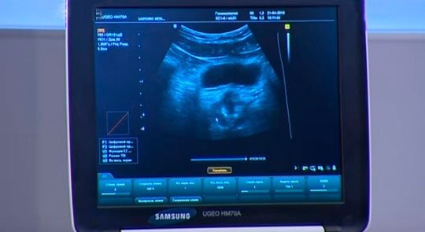
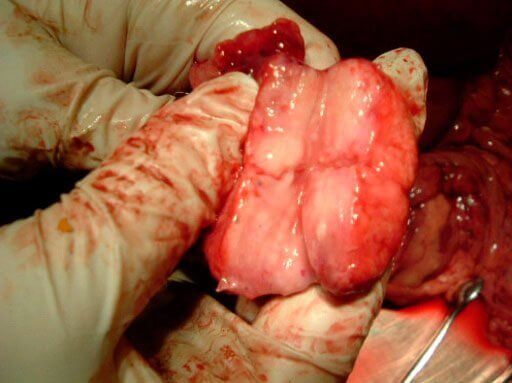
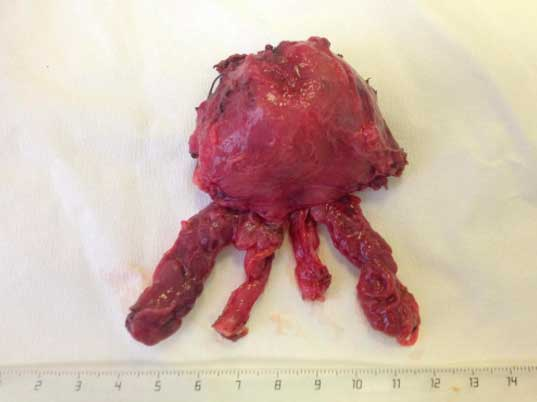

Nu trata impotența cu Viagra!
Există metode pentru
îmbunătățirea potenței sexuale și evitarea cancerului fără să mergi la medic?
Potența sexuală slăbită este un simptom al unei condiții care îți pune viața în pericol. Urologii trag un semnal de alarmă! După cercetarea statisticilor din ultimii 20 de ani, ei au ajuns la o concluzie care îți dă fiori. Orice slăbire a potenței sexuale la vârste sub 55 de ani duce inevitabil la impotența totală și cancer. Dr. Petru Ștefănescu, un urolog cu 20 de ani de experiență profesională vă va spune dacă există metode de tratament al potenței sexuale slăbite și de prevenire a cancerului fără să mergi la medic.
Ce cauzează potența la bărbații sub 55 de ani?
Practic, se întâmplă destul de rar. Doar 10% dintre bărbații români au probleme cu erecția la această vârstă. Deseori, ei cred că este o afecțiune temporară sau că e rezultatul stresului și al obiceiurilor nesănătoase.
În mod frecvent, bărbații sunt dispuși să accepte eșecurile din dormitor deoarece nu știu că este primul (și singurul) simptom al instalării impotenței totale și a cancerului. Ei nu au nicio idee cum să combată problema fără să meargă la medic. Considerând problemele vieții sexuale ca o rușine, bărbații cumpără Viagra și alte produse similare. Cu toate acestea, amplificatorii pot oferi doar un ajutor de scurtă durată, fără a elimina adevărata cauză a potenței slăbite.
Care sunt adevăratele consecințe ale potenței slăbite?
În realitate, dacă ai probleme cu erecția înainte de 55 de ani, e un motiv să te alarmezi! Potența slăbită care duce la acte sexuale rare și ejaculare slabă provoacă o congestie a venelor sanguine în prostată. În 95% din cazuri, acest tip de problemă de potență sexuală duce la inflamarea cronică a prostatei (prostatită) în 2 sau cel mult 3 ani.
Contrar credințelor populare, prostatita nu este o boală care îi afectează doar pe bărbații în vârstă.
Imagine prin ultrasunete: imaginea prostatei unui bărbat de 32 de ani. Dezvoltarea prostatitei este instantanee. Bărbatul a avut probleme cu erecția timp de aproximativ 4 luni înainte să meargă la medic. O inflamație care pune viața în pericol poate fi observată deja în imagine.
La ce poate duce prostatita și care sunt simptomele acesteia?
În 100% din cazuri, prostatita duce la impotență în doar un an. Bărbatul își pierde capacitatea de a trăi o viață împlinită. Boala progresează aproape asimptomatic și corpul tău nu trimite alte semnale cu excepția potenței sexuale scăzute. Vreau să precizez încă o dată că nici obiceiurile nesănătoase, nici factorii de mediu nocivi nu sunt cauza potenței slăbite. Prostatita care progresează este principalul vinovat!
Pe lângă impotența totală, un stadiu acut al prostatitei provoacă durere acută în organele genitale și senzația frecventă de urinare.
Progresul ulterior al prostatitei este rapid. Intervalul dintre simptomul inițial - erecție slăbită - și cancer sau hiperplazie este de 2-3 ani.
Cancer
Stadiul 1
Stadiul 2
Stadiul 3
Stadiul 4
Statistici: cancerul de prostată este responsabil pentru 75% din toate decesele bărbaților.
Iată câteva dintre exemplele îngrozitoare care, din nefericire, le sunt foarte cunoscute medicilor.
1. Un bărbat de 47 de ani în timpul operației pentru îndepărtarea tumorii prostatei. Din nefericire, bărbatul a decedat.
2. O tumoare care a fost îndepărtată cu succes din corpul altui pacient. S-a dezvoltat în 1,5 ani după ce bărbatul a simțit primele dureri la prostată.
„Prostatita este o stare care pune viața în pericol, unul dintre principalele pericole ale acesteia fiind progresul către cancerul de prostată.”
Cât de dificil este tratamentul prostatitei?
Ei bine, iată de ce nivelul mortalității este atât de mare. Bărbații nu sunt conștienți de modalitățile de prevenire a prostatitei fără a merge la medic. Dar ei preferă să nu ceară sfatul medicului nici măcar atunci când au prostatită neglijată. Se întâmplă deoarece bărbații se așteaptă să fie supuși unor proceduri neplăcute, precum injecții în prostată, masaj și stimulare electrică a prostatei prin penis. Toate aceste proceduri sunt utilizate pentru a preveni cancerul de prostată și hiperplazia.
Ce ar trebui să facă bărbații pentru a evita tratamentul care poate fi mai înfricoșător decât boala în sine?
Paradoxul este că, pentru a îmbunătăți potența sexuală și libidoul, reducând astfel riscul de prostatită cu 99%, bărbații ar trebui să afle despre medicamente care le sunt cunoscute doar celor care profesează în medicină. În prezent, un produs natural numit s-a dovedit a fi cel mai eficient. Acest remediu este folosit de profesioniștii din medicină şi este sub formă de tablete, care conțin un complex de ingrediente naturale ce tratează prostatita în curs de dezvoltare - cauza potenței sexuale scăzute.
O echipă mare de dezvoltatori, care a inclus specialiști chinezi de top în medicina alternativă și practicieni din diferite spitale în care se tratează zilnic prostatita, și-a dedicat mai mulți ani din viață pentru a crea .
Există studii care confirmă eficacitatea ?
Există câteva, desigur. Certificarea a fost precedată de 15 ani de teste clinice. Urologii profesioniști au căutat mult timp o combinație de componente și în sfârșit au obținut un nivel complet nou în tratamentul impotenței și al prostatitei. Peste 90% dintre bărbați au scăpat de boală fără recidive în 7 ani.
are o acțiune cuprinzătoare. Chiar și simptomele prostatitei neglijate dispar încă din primele 3 zile. Potența sexuală devine la fel de bună ca în cazul unui bărbat de 18 ani, urinarea dificilă și durerea din scrot dispar. După aceea, medicamentul reduce inflamarea rămasă în prostată, care a cauzat boala, făcând, prin urmare, recidiva aproape imposibilă.
SONDAJ: Cum ai scăpat de prostatită?
Din câte înțeleg, nu trebuie să mergi la medic pentru a cumpăra ?
Ai perfectă dreptate. E de preferat să comanzi de pe website-ul oficial al producătorului din România. Toți practicienii fac așa. În primul rând, este o opțiune mult mai ieftină, în al doilea rând, elimină posibilitatea cumpărării unui produs contrafăcut, iar în al treilea rând, poate fi livrat la orice destinație aleasă în doar câteva zile. Este perfect confidențial, astfel că poți face o comandă liniștit.
În încheierea conversației, ce ai dori să le recomanzi bărbaților?
Aveți grijă de sănătatea voastră! Potența sexuală scăzută nu e altceva decât un simptom al tumorilor maligne în curs de dezvoltare, care pot revendica sute de mii de vieți anual. În prezent, nu trebuie să accepți impotența sau să te supui unor proceduri umilitoare pentru a-ți îmbunătăți potența.
L-am rugat pe producător să le ofere cititorilor noștri o reducere suplimentară, iar producătorul a fost de acord. Acum oricine poate cumpăra cu o reducere suplimentară de 50%. Dorim să menționăm încă o dată website-ul oficial pentru plasarea unei comenzi în România.

Comentarii
Ionuț
Nu m-am gândit niciodată că erecția slăbită poate duce la consecințe atât de cumplite! Mulțumesc pentru articol! Acum îmi dau seama că ar trebui să am mai multă grijă de mine.
Adrian
Am avut probleme cu prostata anul trecut. Am încercat s-o tratez cu masaj și tablete... Nu m-au ajutat deloc. Când am aflat despre nu am ezitat să-l comand. Am uitat de durerea din scrot și erecția slăbită, fără exagerare, într-o noapte. Am fost vindecat complet de afecțiunea care a durat mai bine de un an. Medicilor nu le-a venit să creadă! Acum sunt fericit!
Marian
Acum șase luni, medicii mi-au spus că nu voi mai avea niciodată erecție și că am prostatită cronică. Atunci când am auzit, am fost la un pas de a mă sinucide. Credeam că nimic nu mă poate ajuta Când am aflat despre am realizat că asta este șansa mea! Chiar funcționează!
Simon
Fraților, sunt puțin îngrijorat. Am avut cu siguranță probleme acolo jos, dar nu m-am gândit niciodată că ar putea fi atât de grav. M-ați convins să comand imediat. Cine știe ce se poate întâmpla...
Crina
Când eu și soțul meu am avut probleme în viața sexuală, am crezut că problema e la mine. Dar mai târziu, iubi mi-a spus că suferă de prostatită de mult timp. A încercat mulți ani să o trateze, dar fără succes. Un medic i-a recomandat . L-a luat doar o săptămână și cred că am petrecut toată luna în dormitor.
Alex
Făceam sport, țineam o dietă specială și făceam sex în mod regulat, deși prostatita îl făcea dureros. Totuși, doar m-a ajutat să mă vindec complet de boală. E o adevărată piatră de temelie pentru sănătatea masculină!
Iulian
Remediul este grozav. Nu te dezamăgește. Am potență bună și mă simt sănătos. Am uitat complet de durerea pe care o aveam la toaletă.
Florin
Este un lucru bun că un medicament nou care poate preveni cancerul a apărut în sfârșit pe piață. Cel mai important e că este ieftin. Apropo, când l-am comandat, totul a fost perfect confidențial, inclusiv livrarea. A fost foarte plăcut!